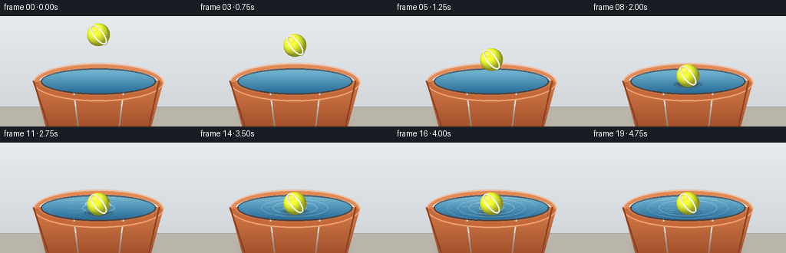
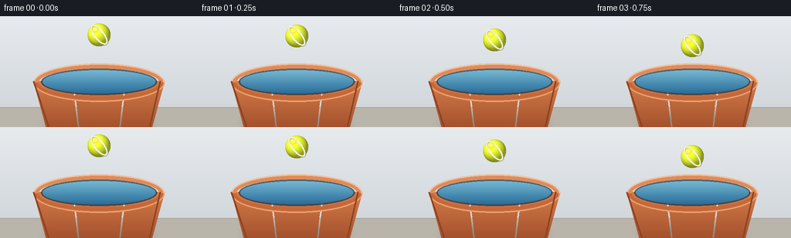
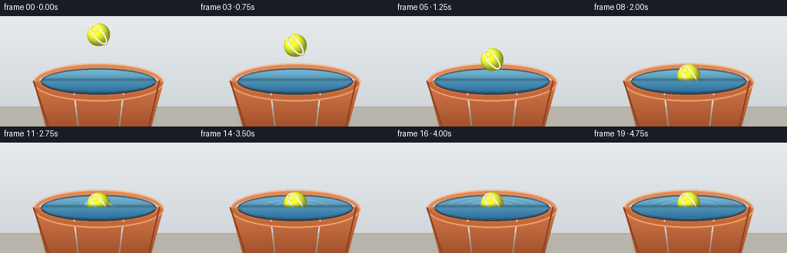
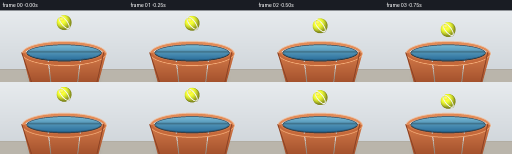

CODING AGENTS AS PIXEL WORLD MODELS
traex/Seed-2.1-Pro-0915 · phygen_008
点击播放 · 原生 RGB 像素
逐轮保存的候选
回放视频、检查图与代码变化。
每份候选均可单独播放。实际图片检查记录在下方工具轨迹中。
候选 01播放与检查图
点击播放 · 原生 RGB 像素


展开代码变化
--- 上一保存版本
+++ 本次保存版本
@@ -0,0 +1,301 @@
+"""Text-to-video: a tennis ball is gently placed on the surface of a bucket
+filled with water.
+
+Pure numpy + PIL rendering. The scene is drawn at 2x resolution with PIL and
+downsampled for anti-aliased edges.
+"""
+import math
+
+import numpy as np
+from PIL import Image, ImageDraw, ImageFilter
+
+import artifact_io
+
+W, H, N, FPS = 256, 144, 20, 4.0
+S = 2 # supersampling factor
+
+
+# ---------------------------------------------------------------- geometry
+class Scene:
+ cx = 128
+ rim_cy = 86 # rim centre height
+ rim_rx = 82
+ rim_ry = 22
+ water_rx = 75
+ water_ry = 17
+ water_cy = 85
+ ball_r = 15
+ rest_y = 79 # floating ball centre (mostly above water)
+
+
+def sc(v):
+ """Scale a base-resolution coordinate/value to render resolution."""
+ if isinstance(v, (tuple, list)):
+ flat = []
+ for x in v:
+ if isinstance(x, (tuple, list)):
+ flat.extend(x)
+ else:
+ flat.append(x)
+ return tuple(int(round(x * S)) for x in flat)
+ return int(round(v * S))
+
+
+# ---------------------------------------------------------------- background
+def draw_background(img):
+ draw = ImageDraw.Draw(img)
+ top = np.array([231, 235, 238], dtype=float)
+ bot = np.array([205, 211, 216], dtype=float)
+ for y in range(sc(H)):
+ t = y / (sc(H) - 1)
+ c = tuple((top * (1 - t) + bot * t).astype(int))
+ draw.line([(0, y), (sc(W), y)], fill=c)
+ floor_y = sc(118)
+ draw.rectangle([0, floor_y, sc(W), sc(H)], fill=(186, 181, 171))
+ draw.line([0, floor_y, sc(W), floor_y], fill=(170, 164, 153), width=sc(1))
+ sh = Image.new("RGBA", img.size, (0, 0, 0, 0))
+ ImageDraw.Draw(sh).ellipse(sc((60, 128, 196, 146)), fill=(40, 35, 30, 90))
+ sh = sh.filter(ImageFilter.GaussianBlur(sc(5)))
+ img.alpha_composite(sh)
+
+
+# ---------------------------------------------------------------- bucket
+def bucket_polygon(draw, fill, outline=None):
+ cx, cy = Scene.cx, Scene.rim_cy
+ rx = Scene.rim_rx + 3
+ pts = [
+ (cx - rx, cy - 2),
+ (cx + rx, cy - 2),
+ (cx + rx * 0.80, 146),
+ (cx - rx * 0.80, 146),
+ ]
+ draw.polygon(sc(pts), fill=fill, outline=outline)
+
+
+def draw_bucket_back(img):
+ cx, cy = Scene.cx, Scene.rim_cy
+ top_c = np.array([214, 124, 74], float)
+ bot_c = np.array([162, 80, 44], float)
+ grad = Image.new("RGBA", img.size, (0, 0, 0, 0))
+ gd = ImageDraw.Draw(grad)
+ y0, y1 = sc(cy - 2), sc(146)
+ for y in range(y0, y1):
+ t = (y - y0) / max(1, y1 - y0)
+ c = tuple((top_c * (1 - t) + bot_c * t).astype(int))
+ gd.line([(sc(cx - Scene.rim_rx - 3), y), (sc(cx + Scene.rim_rx + 3), y)],
+ fill=c + (255,))
+ mask = Image.new("L", img.size, 0)
+ bucket_polygon(ImageDraw.Draw(mask), fill=255)
+ layer = Image.composite(grad, Image.new("RGBA", img.size, (0, 0, 0, 0)), mask)
+
+ d = ImageDraw.Draw(layer)
+ for f, a in ((0.5, 26), (-0.5, 18)):
+ x = sc(cx + f * Scene.rim_rx * 0.8)
+ d.line([(x, sc(cy + 6)), (sc(cx + f * Scene.rim_rx * 0.66), sc(143))],
+ fill=(255, 220, 190, a), width=sc(2))
+
+ bbox = sc((cx - Scene.rim_rx - 3, cy - Scene.rim_ry - 3,
+ cx + Scene.rim_rx + 3, cy + Scene.rim_ry + 3))
+ d.arc(bbox, start=180, end=360, fill=(226, 138, 86), width=sc(7))
+ d.arc(bbox, start=180, end=360, fill=(245, 178, 130, 160), width=sc(2))
+ img.alpha_composite(layer)
+
+
+def draw_water(img, frame_i, ball_y, splash_t):
+ cx, cy = Scene.cx, Scene.water_cy
+ rx, ry = Scene.water_rx, Scene.water_ry
+ bbox = sc((cx - rx, cy - ry, cx + rx, cy + ry))
+
+ top_c = np.array([122, 188, 214], float)
+ bot_c = np.array([36, 104, 150], float)
+ grad = Image.new("RGBA", img.size, (0, 0, 0, 0))
+ wd = ImageDraw.Draw(grad)
+ for y in range(sc(cy - ry), sc(cy + ry) + 1):
+ t = (y - sc(cy - ry)) / max(1, sc(2 * ry))
+ c = tuple((top_c * (1 - t) + bot_c * t).astype(int))
+ wd.line([(sc(cx - rx), y), (sc(cx + rx), y)], fill=c + (255,))
+ wmask = Image.new("L", img.size, 0)
+ ImageDraw.Draw(wmask).ellipse(bbox, fill=255)
+ water = Image.composite(grad, Image.new("RGBA", img.size, (0, 0, 0, 0)), wmask)
+
+ d = ImageDraw.Draw(water)
+ for k, (xo, w, a) in enumerate([(-30, 26, 22), (18, 40, 16), (44, 14, 18)]):
+ yy = sc(cy - 6 + 2 * k)
+ d.rounded_rectangle(sc((cx + xo - w, yy - 1, cx + xo + w, yy + 1)),
+ radius=sc(1), fill=(225, 244, 250, a))
+
+ if splash_t >= 0:
+ clip = Image.new("L", img.size, 0)
+ ImageDraw.Draw(clip).ellipse(bbox, fill=255)
+ rings = Image.new("RGBA", img.size, (0, 0, 0, 0))
+ rd = ImageDraw.Draw(rings)
+ for k in range(4):
+ age = splash_t - k * 1.9
+ if age < 0:
+ continue
+ rr_x = 6 + age * 7.5
+ rr_y = 2.2 + age * 1.9
+ alpha = int(150 * math.exp(-age / 5.5))
+ if alpha <= 4 or rr_x > rx:
+ continue
+ rb = sc((cx - rr_x, cy - rr_y, cx + rr_x, cy + rr_y))
+ rd.ellipse(rb, outline=(235, 248, 252, alpha), width=sc(1))
+ for k in range(5):
+ ph = frame_i * 0.9 + k * 1.7
+ wy = cy - 9 + k * 4 + math.sin(ph) * 1.2
+ x0 = cx - 38 + (k % 2) * 14
+ rd.line(sc((x0, wy, x0 + 26, wy + math.sin(ph + 1) * 1.5)),
+ fill=(240, 250, 255, 40), width=sc(1))
+ rings.putalpha(Image.composite(rings.getchannel("A"),
+ Image.new("L", img.size, 0), clip))
+ water.alpha_composite(rings)
+
+ ImageDraw.Draw(water).ellipse(bbox, outline=(20, 48, 66, 180), width=sc(2))
+ img.alpha_composite(water)
+
+
+# ---------------------------------------------------------------- tennis ball
+def make_ball_sprite(r):
+ pad = 3
+ size = sc(2 * r + 2 * pad)
+ cx = cy = sc(r + pad)
+ R = sc(r)
+
+ yy, xx = np.mgrid[0:size, 0:size]
+ dx = (xx - cx) / R
+ dy = (yy - cy) / R
+ inside = dx * dx + dy * dy <= 1.0
+ nz = np.sqrt(np.clip(1 - dx * dx - dy * dy, 0, 1))
+
+ lx, ly, lz = -0.45, -0.55, 0.70
+ diff = dx * lx + dy * ly + nz * lz
+ shade = 0.55 + 0.6 * np.clip(diff, 0, 1) + 0.18 * np.clip(nz, 0, 1)
+ base = np.array([208, 220, 46], float)
+ felt = base[None, None, :] * shade[..., None]
+ rim = np.clip((dx * 0.6 + dy * 0.4), 0, 1) ** 3 * (nz > 0.25)
+ felt += rim[..., None] * np.array([50, 55, 10])[None, None, :]
+ felt += np.random.default_rng(7).normal(0, 4.5, felt.shape)
+
+ arr = np.zeros((size, size, 4), dtype=float)
+ arr[..., :3] = np.clip(felt, 0, 255)
+ arr[..., 3] = inside * 255
+ sprite = Image.fromarray(arr.astype(np.uint8), "RGBA")
+
+ seam = Image.new("RGBA", (size, size), (0, 0, 0, 0))
+ sd = ImageDraw.Draw(seam)
+ erx, ery = sc(r * 0.42), sc(r * 1.02)
+ sd.ellipse([cx - erx, cy - ery, cx + erx, cy + ery],
+ outline=(238, 240, 226, 255), width=max(2, sc(2)))
+ seam = seam.rotate(38, center=(cx, cy), resample=Image.BICUBIC)
+ disc = Image.new("L", (size, size), 0)
+ ImageDraw.Draw(disc).ellipse([cx - R, cy - R, cx + R, cy + R], fill=255)
+ seam.putalpha(Image.composite(seam.getchannel("A"),
+ Image.new("L", (size, size), 0), disc))
+ shade_layer = Image.new("RGBA", (size, size), (0, 0, 0, 0))
+ ImageDraw.Draw(shade_layer).ellipse(
+ [cx - erx, cy - ery, cx + erx, cy + ery],
+ outline=(120, 120, 40, 120), width=max(2, sc(1) + 1))
+ shade_layer = shade_layer.rotate(38, center=(cx, cy), resample=Image.BICUBIC)
+ shade_layer.putalpha(Image.composite(shade_layer.getchannel("A"),
+ Image.new("L", (size, size), 0), disc))
+ shifted = Image.new("RGBA", (size, size), (0, 0, 0, 0))
+ shifted.alpha_composite(shade_layer, (sc(1), sc(1)))
+ sprite.alpha_composite(shifted)
+ sprite.alpha_composite(seam)
+
+ hl = Image.new("RGBA", (size, size), (0, 0, 0, 0))
+ hd = ImageDraw.Draw(hl)
+ hd.ellipse([cx - sc(r * 0.62), cy - sc(r * 0.7),
+ cx - sc(r * 0.05), cy - sc(r * 0.25)],
+ fill=(255, 255, 220, 60))
+ hl.putalpha(Image.composite(hl.getchannel("A"),
+ Image.new("L", (size, size), 0), disc))
+ hl = hl.filter(ImageFilter.GaussianBlur(sc(1.2)))
+ sprite.alpha_composite(hl)
+ return sprite
+
+
+def draw_ball_and_contact(img, ball_y, splash_t):
+ cx = Scene.cx
+ r = Scene.ball_r
+
+ if splash_t >= -1:
+ sh = Image.new("RGBA", img.size, (0, 0, 0, 0))
+ d = ImageDraw.Draw(sh)
+ a = 120 if splash_t < 0 else max(0, 120 - splash_t * 9)
+ d.ellipse(sc((cx - r - 3, ball_y + r * 0.55, cx + r + 3,
+ ball_y + r * 0.55 + 7)),
+ fill=(12, 44, 60, int(a)))
+ d.arc(sc((cx - r - 1, ball_y + r * 0.35, cx + r + 1,
+ ball_y + r * 0.35 + 12)),
+ start=0, end=180, fill=(240, 250, 252, 150), width=sc(1))
+ sh = sh.filter(ImageFilter.GaussianBlur(sc(0.8)))
+ img.alpha_composite(sh)
+
+ sprite = make_ball_sprite(r)
+ pad = 3
+ img.alpha_composite(sprite, (sc(cx - r - pad), sc(ball_y - r - pad)))
+
+ if 0 <= splash_t <= 4:
+ layer = Image.new("RGBA", img.size, (0, 0, 0, 0))
+ d = ImageDraw.Draw(layer)
+ rng = np.random.default_rng(21)
+ m = max(0.0, 1 - splash_t / 4.0)
+ for k in range(7):
+ side = -1 if k % 2 == 0 else 1
+ dxp = side * (r * 0.6 + splash_t * (2.2 + rng.random() * 1.6))
+ dyp = 6 - splash_t * (3.6 + rng.random() * 2.0) + splash_t * splash_t * 0.7
+ rad = max(sc(0.8), sc(1.4 - splash_t * 0.18))
+ x = sc(cx + dxp)
+ y = sc(ball_y + dyp)
+ d.ellipse([x - rad, y - rad, x + rad, y + rad],
+ fill=(225, 242, 248, int(200 * m)))
+ img.alpha_composite(layer)
+
+
+# ---------------------------------------------------------------- front rim
+def draw_bucket_front(img):
+ d = ImageDraw.Draw(img)
+ cx, cy = Scene.cx, Scene.rim_cy
+ bbox = sc((cx - Scene.rim_rx - 3, cy - Scene.rim_ry - 3,
+ cx + Scene.rim_rx + 3, cy + Scene.rim_ry + 3))
+ d.arc(bbox, start=0, end=180, fill=(196, 104, 58), width=sc(7))
+ d.arc(bbox, start=0, end=180, fill=(236, 160, 110, 170), width=sc(2))
+ d.line([sc((cx - Scene.rim_rx - 3, cy - 2)), sc((cx - Scene.rim_rx * 0.80, 143))],
+ fill=(140, 66, 36), width=sc(2))
+ d.line([sc((cx + Scene.rim_rx - 3, cy - 2)), sc((cx + Scene.rim_rx * 0.80, 143))],
+ fill=(140, 66, 36), width=sc(2))
+
+
+# ---------------------------------------------------------------- motion
+def ball_position(i):
+ contact_frame = 9.0
+ if i <= contact_frame:
+ t = i / contact_frame
+ ease = 0.5 - 0.5 * math.cos(math.pi * t)
+ return 24 + (Scene.rest_y - 24) * ease, i - contact_frame
+ dt = i - contact_frame
+ bob = 2.6 * math.exp(-dt / 4.0) * math.sin(dt * 1.25)
+ return Scene.rest_y + bob, dt
+
+
+def render_frame(i):
+ big = Image.new("RGBA", (W * S, H * S), (0, 0, 0, 255))
+ draw_background(big)
+ draw_bucket_back(big)
+ ball_y, splash_t = ball_position(i)
+ draw_water(big, i, ball_y, splash_t)
+ draw_ball_and_contact(big, ball_y, splash_t)
+ draw_bucket_front(big)
+ frame = big.resize((W, H), Image.LANCZOS)
+ return np.asarray(frame.convert("RGB"), dtype=np.uint8)
+
+
+def main():
+ frames = np.stack([render_frame(i) for i in range(N)], axis=0)
+ artifact_io.save(frames, ".")
+ print(f"saved {frames.shape}")
+
+
+if __name__ == "__main__":
+ main()
候选 02播放与检查图
点击播放 · 原生 RGB 像素


展开代码变化
--- 上一保存版本
+++ 本次保存版本
@@ -154,6 +154,39 @@
img.alpha_composite(water)
+def draw_water_front(img):
+ """Near half of the surface, composited over the ball so its submerged
+ cap is hidden behind the water in front of it."""
+ cx, cy = Scene.cx, Scene.water_cy
+ rx, ry = Scene.water_rx, Scene.water_ry
+ bbox = sc((cx - rx, cy - ry, cx + rx, cy + ry))
+
+ top_c = np.array([122, 188, 214], float)
+ bot_c = np.array([36, 104, 150], float)
+ grad = Image.new("RGBA", img.size, (0, 0, 0, 0))
+ wd = ImageDraw.Draw(grad)
+ for y in range(sc(cy - ry), sc(cy + ry) + 1):
+ t = (y - sc(cy - ry)) / max(1, sc(2 * ry))
+ c = tuple((top_c * (1 - t) + bot_c * t).astype(int))
+ wd.line([(sc(cx - rx), y), (sc(cx + rx), y)], fill=c + (255,))
+ wmask = Image.new("L", img.size, 0)
+ ImageDraw.Draw(wmask).ellipse(bbox, fill=255)
+ water = Image.composite(grad, Image.new("RGBA", img.size, (0, 0, 0, 0)), wmask)
+
+ ellipse = Image.new("L", img.size, 0)
+ ImageDraw.Draw(ellipse).ellipse(bbox, fill=255)
+ band = Image.new("L", img.size, 0)
+ ImageDraw.Draw(band).rectangle(
+ sc((cx - rx, cy - 2, cx + rx, cy + ry)), fill=255)
+ band = band.filter(ImageFilter.GaussianBlur(sc(1.5)))
+ front_mask = Image.composite(band, Image.new("L", img.size, 0), ellipse)
+ front = Image.new("RGBA", img.size, (0, 0, 0, 0))
+ front = Image.composite(water, front, front_mask)
+ sd = ImageDraw.Draw(front)
+ sd.arc(bbox, start=10, end=170, fill=(8, 38, 56, 60), width=sc(4))
+ img.alpha_composite(front)
+
+
# ---------------------------------------------------------------- tennis ball
def make_ball_sprite(r):
pad = 3
@@ -286,6 +319,7 @@
ball_y, splash_t = ball_position(i)
draw_water(big, i, ball_y, splash_t)
draw_ball_and_contact(big, ball_y, splash_t)
+ draw_water_front(big)
draw_bucket_front(big)
frame = big.resize((W, H), Image.LANCZOS)
return np.asarray(frame.convert("RGB"), dtype=np.uint8)
可观测工具轨迹
实际执行的命令与返回图片。
命令 1exit 0
/bin/bash -lc 'ls -la && cat prompt.txt && echo "=====RULES=====" && cat GENERATION_RULES.md && echo "=====SPEC=====" && cat task_spec.json'
命令 2exit 0
/bin/bash -lc "cat artifact_io.py && echo \"=====PLAYER=====\" && sed -n '1,220p' player_template.html"
命令 3exit 1
/bin/bash -lc 'cd . && python generate.py && ls -la'
命令 4exit 0
/bin/bash -lc 'cd . && python generate.py && ls -la && ls frames | head'
命令 5exit 0
/bin/bash -lc "cd . && python - <<'EOF'
import numpy as np
from PIL import Image
for i in range(20):
f=np.asarray(Image.open(f\"frames/{i:02d}.png\").convert(\"RGB\")).astype(int)
r,g,b=f[...,0],f[...,1],f[...,2]
yellow=(r>150)&(g>150)&(b<110)
water=(b>120)&(b>r+25)&(g>r)
orange=(r>150)&(g>60)&(g<170)&(b<100)
ny=int(yellow.sum())
cy=np.mean(np.where(yellow)[0]) if ny else -1
cx=np.mean(np.where(yellow)[1]) if ny else -1
print(f\"f{i:02d} yellow={ny:4d} cent=({cx:5.1f},{cy:5.1f}) water={int(water.sum()):5d} orange={int(orange.sum()):5d} mean={f.mean():.1f}\")
EOF"命令 6exit 0
/bin/bash -lc "cd . && grep -n \"draw_water\\|def render_frame\\|draw_ball_and_contact\\|draw_bucket_front\" generate.py"
命令 7exit 0
/bin/bash -lc "cd . && sed -n '104,160p' generate.py"
命令 8exit 0
/bin/bash -lc "cd . && python generate.py 2>/dev/null && python - <<'EOF'
import numpy as np
from PIL import Image
for i in range(20):
f=np.asarray(Image.open(f\"frames/{i:02d}.png\").convert(\"RGB\")).astype(int)
r,g,b=f[...,0],f[...,1],f[...,2]
yellow=(r>150)&(g>150)&(b<110)
ny=int(yellow.sum())
cy=np.mean(np.where(yellow)[0]) if ny else -1
print(f\"f{i:02d} yellow={ny:4d} cy={cy:5.1f}\")
EOF"保存候选 2 份；完成命令 8 次；可验证图片返回 0 张。原始 API 响应与完整日志保留在本地。